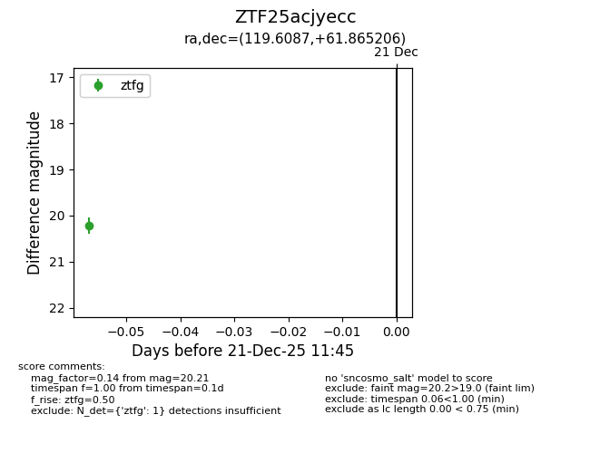
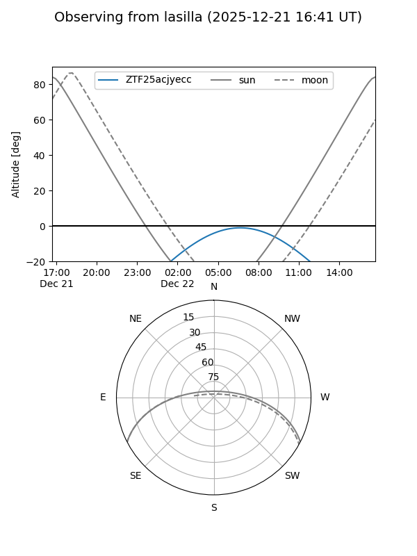

ZTF25acjyecc
Target ZTF25acjyecc at 2025-12-23 11:48
Aliases and brokers:
FINK: fink-portal.org/ZTF25acjyecc
Lasair: lasair-ztf.lsst.ac.uk/objects/ZTF25acjyecc
ALeRCE: alerce.online/object/ZTF25acjyecc
alt names
ZTF25acjyecc (ztf,fink_ztf)
Coordinates:
equatorial (ra, dec) = 119.6087,+61.86521
equatorial (HMS+DMS) = 07:58:26.09,+61:51:54.74
galactic (l, b) = (154.9232,+31.53690)
Flags:
Photometry:
last ztfg=20.21, ztfr=20.17
1 ztfg, 1 ztfr detections
Lightcurve

Visibility


Additional plots